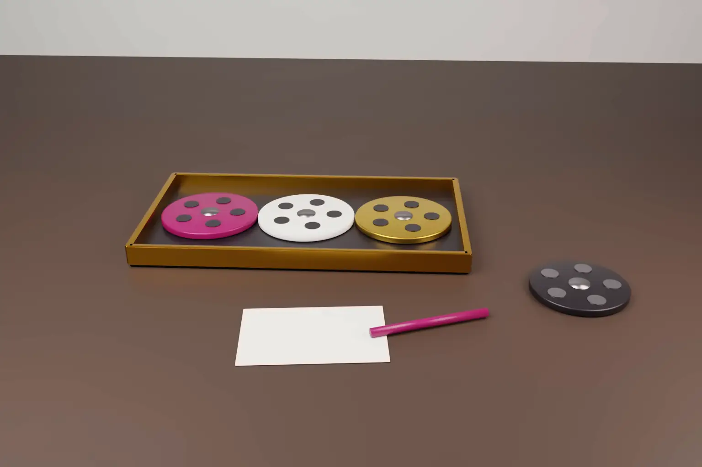

Can an implementer ask an English court to set RAND terms for a whole patent pool? It can at least try. On 28 October 2026 Mellor J listed a trial on that question in Snap v Dolby. The trial starts on 1 November 2027, before injunction risk in the parallel Unified Patent Court actions is expected to arise.
The case is Snap Inc and Snap Group Limited v Dolby Laboratories, Inc and others [2026] EWHC 2757 (Pat). The defendants are four Dolby companies and Access Advance LLC, the pool administrator. The hearing took place on 15 October 2026. The judgment is a case management decision. It does not decide whether any licence terms are RAND.
- A first trial from 1 November 2027 will decide Snap's entitlement to a RAND licence and the RAND terms of the pool licence.
- Dolby wanted willingness and licence scope tried first as preliminary issues. The judge refused that approach.
- The main reason was timing. Without an early trial, injunctions abroad would probably force Snap to capitulate first.
- Snap has undertaken to take a global licence on whatever terms the court finds to be RAND.
- Nothing has been decided on willingness, valuation or competition law. Those issues remain for trial.
The dispute
Snap runs Snapchat. It uses the HEVC video standard, also known as H.265, and makes only minor use of AV1. It does not use VP9 or VVC. Dolby holds patents it says are essential to HEVC. It has a RAND commitment to the ITU-T.
Access Advance runs pools of video codec patents. Dolby is a founding member and has an ownership interest in it. In January 2025 Access Advance launched the Video Distribution Patent (VDP) Pool for internet content distributors. That licence covers HEVC, VP9, VVC and AV1 for a single price. Snap objects that it would pay for codecs it does not use, including AV1, which is intended to be royalty free.
Snap sued in London. It seeks declarations that it is a beneficiary of Dolby's RAND commitment and that the VDP Pool terms for UK Dolby patents are not RAND. It also asks the court to declare the RAND terms that Dolby or Access Advance ought to offer. Snap relied on Tesla v InterDigital [2026] UKSC 27. It argues that a RAND licence may be a pool licence, but its terms must still be RAND.
Parallel proceedings abroad
The judgment records a wider campaign of litigation against Snap. Dolby and four other VDP Pool licensors have brought six actions in the UPC. Five are in the Munich Local Division and one is in the Mannheim Local Division. They seek final injunctions in up to 18 UPC states, with damages and recall. The judge recorded that final injunction risk in the UPC is estimated to arise from about September or October 2027.
There are also six actions in Brazil. On 22 September 2026 a court in Rio de Janeiro granted a preliminary injunction against Snap Inc. Two actions are pending in Delaware. They seek damages, and one also seeks an injunction. Snap alleges a coordinated campaign to push it into the pool licence. The judge expressed no view on that allegation.
What the court decided
An early RAND trial. Snap asked for a trial of about 15 days from 1 November 2027. Dolby, supported by Access Advance, proposed preliminary issues first, namely whether Snap is a willing licensee and the scope of any licence. Valuation would follow in a later trial. Mellor J ordered the split broadly as Snap proposed.
Timing drove the decision. The judge said a refusal "would be likely to render this whole action otiose". Injunctions abroad would probably force Snap to capitulate before any English ruling. The first trial also had a good prospect of fixing the sum payable and ending the dispute. In his view it would yield "a real and substantial advantage".
Dolby's objections were overstated. Dolby said the trial would rest on assumptions and that Snap's split made no sense. The judge accepted there was no entirely clean split. He held that Snap must still prove its case and that the decision tree was relatively simple. He said Dolby was "making a mountain out of some relatively small molehills".
Little prejudice to Dolby. Snap has undertaken to take a global licence on the terms the court decides are RAND. The main thing Dolby loses is leverage from injunctions. The judge said SEP owners do not really want injunctions, other than as a negotiating tactic.
The parties must now agree a more precise list of issues. A case management conference was fixed for 12 or 13 November 2026.
What the court did not decide
- It did not decide whether Snap is a willing licensee. Dolby says a licensee who never asked for a bilateral licence cannot trigger the RAND obligation by suing. The judge found that a little surprising, but left it for trial.
- It did not decide whether the VDP Pool terms are RAND, or whether a single price for four codecs can be RAND.
- It did not decide whether Dolby's commitment covers AV1. Dolby says it made no RAND commitment for AV1.
- It did not decide Snap's competition law claims. Snap proposes that they be parked for later determination.
- It did not restrain the UPC, Brazilian or US proceedings.
How Europe, the US and India compare
United Kingdom. Since Unwired Planet v Huawei [2020] UKSC 37, English courts can set global FRAND terms for a portfolio. An implementer that refuses those terms can face a UK injunction. The Court of Appeal has also declared that a willing licensor would grant an interim licence. It did so in Panasonic v Xiaomi and Lenovo v Ericsson. Snap v Dolby uses an early trial date to protect an implementer facing foreign injunctions.
European Union and the UPC. The CJEU in Huawei v ZTE (C-170/13) set out steps a SEP holder and an implementer must follow before an injunction. National courts in Germany, and now UPC local divisions, apply that framework. UPC courts consider FRAND mainly as a defence to an injunction. As far as reported, they have not set global rates at an implementer's request. Our note on the UPC PMAC FRAND guidelines explains current UPC practice.
United States. US courts rarely grant SEP injunctions, applying the eBay v MercExchange test. They have set RAND rates where the parties put the question before them. In Microsoft v Motorola the Ninth Circuit upheld a RAND rate for H.264 video codec and wireless networking patents. A global rate is usually set only with both parties' consent.
India. Indian courts have not yet set a global FRAND rate. The Delhi High Court instead orders pro tem security, a deposit paid while the case proceeds. Nokia, among others, has obtained such orders. Our article on SEP evidence and claim mapping in India covers how essentiality is proved there.
Why this matters
Video streaming, social media and device companies increasingly face pool licences rather than single portfolio offers. Snap v Dolby shows that an English court may examine whether a pool licence is RAND. That includes bundles covering standards the implementer does not use. The timetable also matters. An English trial date ahead of foreign injunction risk can shift negotiating leverage.
Indian technology and content companies with UK or European operations should note the point. A UK subsidiary can be a claimant in London and a defendant in the UPC at once, as Snap Group Limited is here.
Practical steps
- Implementers should map which standards they actually use before negotiating a pool licence. Keep evidence of codec usage by product and region.
- Implementers should ask for a bilateral licence in writing before suing. Dolby's willingness argument shows the risk of skipping that step.
- Implementers considering a UK RAND claim should be ready to give an undertaking to accept the terms the court sets.
- SEP holders and pools should explain how a bundled price relates to each standard. A single price for unused codecs invites challenge.
- Both sides should plan forum strategy early. Track UPC, Brazilian, US and UK timetables together, since the order of rulings shapes leverage.
We advise on SEP licensing, claim charts and essentiality analysis across India, the US and Europe. See our international patent support services and our note on the UK SEP consultation response.
Frequently asked questions
Can a UK court set RAND terms for a patent pool licence?
The question will be tried in Snap v Dolby. Snap argues that a pool licence offered under a RAND commitment must itself be on RAND terms. The court has listed a trial from 1 November 2027 to decide it.
Why did the court order an early RAND trial in Snap v Dolby?
Injunctions sought in the UPC and Brazil could force Snap to settle before any English ruling. The judge held that refusing an early trial would likely make the English action pointless.
Does the UPC set FRAND rates?
Not at an implementer's request, as far as reported. UPC local divisions assess FRAND mainly when a defendant raises it against an injunction, applying the Huawei v ZTE framework.